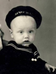
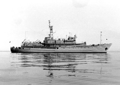
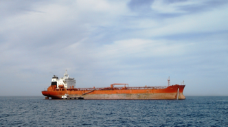
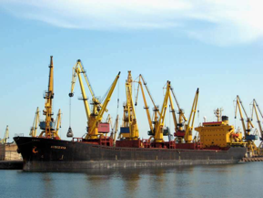
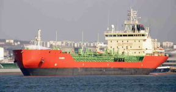
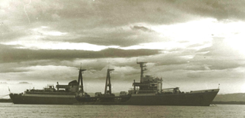
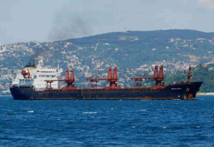
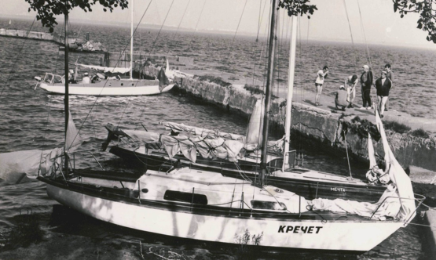
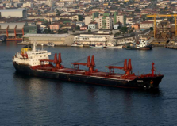
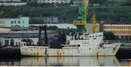

Мечта детства
Все началось с этой фотографии.

Пронести мечту детства через всю жизнь и незабвенно воплотить ее - поступок по-настоящему сильного духом человека! Как совместить суровый труд и романтику в профессиональной деятельности, рассказывает бывалый моряк, Геннадий Зелепуга, и учит нас не отступаться от заветной цели.
- Командир части уговорил меня сходить в поход на килекторе КИЛ-27 (это судно занимающееся установкой навигационного оборудования, плав. причалов и т.д.),- начал свой рассказ Геннадий Перевестись в Ленинград удалось только осенью 1984 года. До поступления в Ленинградский кораблестроительный институт, поработал в 6-й экспедиции г.Кронштадт на гидрографическом катере. В карабелке учился на дневном факультете. Закончив общеинженерный факультет, перевёлся на заочный судоводительский факультет ЛВИМУ им. Адмирала Макарова. Продолжил работу в воинской части города Мурманск на теплоходе «Тулома». В 1990 году перевёлся в научное производственное объединение «Севрыбпоиск», где работал на различных судах компании до 2000 г. Затем начал трудиться в международных компаниях на балкерах и танкерном флоте по настоящее время.
Первое плавание: Поход на учебном корабле «Луга» в 1978 году по маршруту

Тактико-технические данные:
Водоизмещение, т:
стандартное: 1474
полное: 1848
Размеры, м:
длина: 72,2
ширина: 11,99
осадка: 4,17
Скорость полного хода, уз: 17
Дальность плавания: 7800 миль (11 уз)
Автономность, сут: 30
Силовая установка: 2х1800 л.с., дизели «Згода-Зульцер» 6ТD-48, 2 ВФШ, 3 ДГ «Вола» 42ZPM-39H12 по 240 кВт, 1 ДГ «Вола» 36ZPM-41H6/1615 125 кВт
РТВ: НРЛС «Дон», аппаратура госопознавания «Нихром-РР»
Экипаж, чел: 56 (20 офицеров) + 93 курсанта
Не забываемые впечатления от похода:
Кронштадт – Таллин – Лиепая – Балтийск – Кронштадт Самостоятельные штурманские вахты, небольшой шторм, но все были «зелёные», часть курсантов не смогла стоять вахту, принимали горизонтальное положение в кубриках. Морская болезнь, дело привычки, но не все переносят качку и в итоге уходят из флота. До поступления в училище, я никогда не был на море, поэтому влюбился в него с первого взгляда.
- Сейчас Вы в плавании? Куда держите курс и на сколько ушли?
- Сейчас в активном поиске работы. После годового перерыва ее сложно найти в международной компании и плюс пенсионный возраст (обычно для моряков это 55 лет).
- Сложно ли найти работу моряку?
- Довольно сложно найти в хороших компаниях и современных судах, т.к. очень высокие требования к профессиональному уровню, необходимо дополнительно пройти специальную подготовку на курсах в тренажёрных центрах, согласно требований ПДНВ (]подготовка и депломирование моряков и несение вахты), чтобы получить все необходимые сертификаты и лицензии.Высокие требования к английскому языку. Хорошие учебные базы находятся в Санкт-Петербурге и Новороссийске.


- Что моряки берут с собой в плаванье?
- Что берут? Обычный набор сменной одежды. Спец.одежду выдаёт компания при отъезде в офисе, или получаешь на судне. Последнее время больше берут различные мобильные устройства, заполненные разными игрушками, музыкой, фильмами, фотографиями и т.д.
- Каков распорядок дня на корабле?
- В основном весь экипаж несёт ходовые вахты и стояночные согласно судового расписания. На судне обычный восьми часовой рабочий день.
- Есть ли у моряков свободное время, и как они его проводят?
- Каждый по разному проводит свое свободное время. Кто в спортзале на тренажёрах, кто читает книги, кто смотрит фильмы.
- Как полгода держать себя морально: не сдаться и не сойти в ближайшем порту?
- В моей практике, чтобы кто-то уходил с судна добровольно, не было случаев. Все идут работать на судно сознательно и понимают, что их ожидает. Обычно списывают за некомпетентность или пьянство.
- Тяжело ли без женщин чисто психологически в мужcком коллективе или, наоборот, с мужчинами легче жить?
- Когда женщин на судне нет, работается намного спокойнее. Но в моей практике женщины были в экипажах (повара, буфетчицы, дневальные и 2-й штурман).
- Сколько стран Вы посетили за все время мореходства?
- Легче сказать, где я не был. Это: Япония, Корея, Австралия, Новая Зеландия и западное побережье Южной Америки.
- Каким было самое длительное плаванье в Вашей службе? И самое опасное? Ну или просто самое запоминающееся.
- Самый длительный контракт был 10 месяцев. Тяжело было работать последние полтора месяца, когда весь экипаж сменился, а ты остался один в новом экипаже.


- Работа моряка опасна и трудна? Расскажите о реальных случаях.
- В начале трудовой деятельности на Дальнем Востоке во время тропического циклона занимались спасательными работами в Тихом океане в районе Курильских островов, тогда на боевом корабле погибло три матроса. Одного унесло за борт, а двое при буксировке корабля получили травмы не совместимые с жизнью. Это было на танкере «Дунай»:
А самое запоминающееся плавание было на балкере «Бердянск», порт Масео Бразилия, местный отборочный карнавал, гуляния целую ночь. Грузоотправитель пригласил экипаж на праздник. Действительно стояло его посетить!
Любые конфликтные ситуации пресекаются на месте, все разборки на берегу. Таким оброзом, в Англии пришлость списать сразу всех судоводителей, из-за отказа работать на судах компании. Карабль полтора дня простоял у причала, ожидая доставки смены. Отказников полиция увела в полицейский участок, чтобы не побили на судне за их хамское поведение. Для обеспечения безопасности в пиратских районах, многие компании нанимают вооружённую охрану, как обычно, шесть человек с оружием. Они инструктируют экипаж, как следует себя вести в экстремальных условиях, и несут вахту по охране карабля круглосуточно. В моей практике были случаи, когда на судно ночью пробирались воришки с ножами, обрезали швартовые концы, воровали спасательное имущество расположенное на верхней палубе.
А самое запоминающееся плавание было на балкере «Бердянск», порт Масео Бразилия, местный отборочный карнавал, гуляния целую ночь. Грузоотправитель пригласил экипаж на праздник. Действительно стояло его посетить!
Любые конфликтные ситуации пресекаются на месте, все разборки на берегу. Таким оброзом, в Англии пришлость списать сразу всех судоводителей, из-за отказа работать на судах компании. Карабль полтора дня простоял у причала, ожидая доставки смены. Отказников полиция увела в полицейский участок, чтобы не побили на судне за их хамское поведение. Для обеспечения безопасности в пиратских районах, многие компании нанимают вооружённую охрану, как обычно, шесть человек с оружием. Они инструктируют экипаж, как следует себя вести в экстремальных условиях, и несут вахту по охране карабля круглосуточно. В моей практике были случаи, когда на судно ночью пробирались воришки с ножами, обрезали швартовые концы, воровали спасательное имущество расположенное на верхней палубе.


Один раз напали на матроса, обходившегося судно, связали его на палубе, забрали часы, цепочку, порезали швартовые концы на палубе бака, чтобы увеличить время отступления. Наше судно стояло на якоре в ожидании выгрузки на рейде порта Лагос, Нигерия. Вовремя обнаружили, что матрос долго не возвращается с обхода карабля. Подняли тревогу, все воришки попрыгали за борт, где их ждала джонка (Легкая китайское судно с тупым носом и высоко поднятой кормой ). Это случилось, когда я работал на теплоходе «Бердянск».

- Что все-таки способствовало в достижение цели, ведь было понимание, что работа предстоит тяжелая и опасная?
- В период учебы в кораблестроительном институте, занимался парусным спортом. Со студентами нашей группы мы плавали на яхте «Кречет» по Финскому заливу. Кто попробовал ходить под парусом, укрепляет своё стремление работать на море.
Удивительно, насколько разнообразен труд моряка! Всесильная стихия, риск, сноровка и выдержка, работа в команде, новые места и люди. Это не может не волновать и не будоражить кровь. Действительно, моряк - это не специальность, а образ жизни.
Удивительно, насколько разнообразен труд моряка! Всесильная стихия, риск, сноровка и выдержка, работа в команде, новые места и люди. Это не может не волновать и не будоражить кровь. Действительно, моряк - это не специальность, а образ жизни.


Морская
тату история
Пока отчаянные модники охотно рисуют на своих телах изображения якорей и полуобнаженных русалок, мы расскажем почему и зачем простым морякам так нужны эти символы.
Ставшие популярными татуировки в морском стиле - не просто украшение или способ перещеголять товарища в количестве тематических набивок, а древняя традиция и особый язык моряков. Например, тату с изображением каната, который опоясывал запястье, считали отличительным признаком докера или матроса, а синяя звезда на левом ухе давала понять соратникам, что морской волк совершил успешное плавание вокруг опасного мыса Горн. Если такая звезда была на правом ухе, то моряки знали, что ее владелец прошел пять раз вокруг мыса Горн. Это вызывало особое уважение.
Морская тату-история началась с капитана Д. Кука. Вместе со своей командой он во второй половине XVIII столетия познакомился с
охотно украшали себя причудливыми рисунками. Куку и другим морякам так понравилась эта традиция, что, вернувшись на родину, перед английским двором они предстали уже татуированными.
С тех пор ни один член судна не возвращался из плаванья без татуировки. Моряки верили в суеверия, и рисунки на теле служили для них талисманом и оберегом, защищавшим от бед и неудач. Татуировки отражали достижения и могли многое рассказать другим мореплавателям об их носителе.
Какие же изображения выдавали в моряке “своего” и что они обозначали?
Hold Fast
Эта надпись на пальцах кистей обеспечивала моряку хваткость и силу, чтобы тот мог крепко держать швартовые концы.
Изображение любимой
Ах, как же это сентиментально: суровый моряк, уходя в долгое
плаванье, набивает на своем теле фотографию любимой женщины, чтобы ее лик всегда был с ним. Но реальность оказалась не такой романтичной. Суеверные моряки поясняют, что такая татуировка способна защитить охочих до женской ласки моряков от венерических заболеваний
Петух и свинья
Казалось бы, при чем здесь мореплавание? Дело в том, что этих животных никак нельзя отнести к водоплавающим. Петуха набивали на правую ногу, а свинью на левую. Считалось, что их изображение приведет ноги владельца на землю как можно скорее.
Восточный дракон
Тут так же, как со свиньей и петухом - непонятно, при чем здесь море. Но ответ лежит на поверхности: на языке моряков золотой дракон означал, что его владелец был в Азии и служил в тех морских окрестностях.
Парусник
Изображение парусника на теле, еще один способ рассказать о достижениях моряка. Обладатель такой татуировки уже опытный мореплаватель,
который прошел много испытаний и трудностей на своем пути. Чаще всего парусник изображался с тремя мачтами, потому что тройка считалась счастливым числом. Если изображалось судно с четырьмя мачтами, то с подписью «Прочь от скал» – это обеспечивало безопасное возвращение из путешествия.
Роза ветров
Эта тату еще старше якоря. Звезды всегда служили
морякам ориентиром и путеводителем, а ветер помогал навигации. По этому изображение розы ветров на своем теле стало оберегом и гарантом благополучного пути.
Якорь
Наряду с ласточками, это одна из самых любимых и популярных татуировок моряков. Якорь обозначает безопасность, надежность и постоянство. Один якорь моряку набивали только после прохождения Атлантического океана, а два перекрещенных якоря выдавали в хозяине старшего матроса.
Море в городе:
где найти кусочек синего?
Летом особенно сложно смириться с тем, что пока вы трудитесь на работе, за окном вовсю кипит жизнь, а половина ваших коллег в отпуске на морском побережье. Тем временем вы уже и не помните каково это: идти по песчаному пляжу, когда волны щекочут ноги. Если тоска по морю совсем одолела вас, а возможности уехать из города нет, то утолить жажду морских радостях можно и в Москве. Шарм прибрежных городов, огромные белоснежные суда вдоль парапета, касатки, морские черепахи, теплая вода и горячий песок уже ждут вас прямо в столице.
Корабль Брюсов
А гастрономических удовольствий тут тоже море. Крафтовое мороженное, прохладные коктейли, чилийская и греческая кухни - в общем, настоящее заграничное путешествие.
На Крымской набережной, в парке искусств «Музеон» команда дизайн-завода «Флакон» подарила вторую жизнь старому теплоходу «Валерий Брюсов». Корабль пришвартовался к берегу Крымской набережной в 2014 году, и теперь здесь настоящий кластер необычных пространств. На «Брюсове» вы не только вдоволь можете нагуляться по огромному судну, почувствовав себя полноценным пассажиром, но и найдете в каютах корабля дизайнерские магазины, выставочные пространства, студии и кафе. Из менее банального: арт-школа, коворкинг, вейпшоп.
Обязательно поднимитесь на солнечную палубу. Отсюда открывается живописный панорамный вид на город, реку и парк. Кроме того, здесь проводят мероприятия совершенно разного характера: от концертов и выставок до йога-классов и бесплатных кинопоказов.
На «Брюсове» всегда играет отличная музыка (порой живая или электронная), проводятся вечеринки и презентации. Из-за сжатого внутреннего пространства здесь царит атмосфера камерности. Но тем интереснее. В каждой из бывших кают свой, хоть и маленький, но необычный мир.
А гастрономических удовольствий тут тоже море. Крафтовое мороженное, прохладные коктейли, чилийская и греческая кухни - в общем, настоящее заграничное путешествие.
На «Брюсове» всегда играет отличная музыка (порой живая или электронная), проводятся вечеринки и презентации. Из-за сжатого внутреннего пространства здесь царит атмосфера камерности. Но тем интереснее. В каждой из бывших кают свой, хоть и маленький, но необычный мир.
А гастрономических удовольствий тут тоже море. Крафтовое мороженное, прохладные коктейли, чилийская и греческая кухни - в общем, настоящее заграничное путешествие.
Ссылка на сайт этого места
Виндсерфинг
Гуляя в Строгино, не совсем понимаешь где ты. То ли в Москве, то ли на Гаванских островах.
Если вы всегда мечтали встать на доску, но думали что крупные волны можно найти лишь на морском побережье, то в Строгино быстро развеют ваши догадки. Приручить волну можно и в черте города на самом чистом водоеме Москвы - Строгинской пойме. Обширное водное пространство, практически постоянно гуляющий ветер и удобный спуск на воду создают идеальные условия для занятий виндсерфингом. Именно поэтому здесь образовалось множество школ, обучающих этому виду спорта. Все лето здесь активно занимаются те, кто желает подчинить себе силу воды и ветра. Считается, что у толкового инструктора ученик встает на доску уже после первого практического занятия.
Гуляя в Строгино, не совсем понимаешь где ты. То ли в Москве, то ли на Гаванских островах. На строгинской пойме своя огромная тусовка, ничуть не отстающая от тех, кто практикуется на морском побережье. К тому же, помимо виндсерфинга, на пойме можно заняться вейкбордом, водными лыжами и другими видами аква-спорта. А совсем недалеко расположен Серебряный бор, где можно отдохнуть на песчаном пляже, поиграть в волейбол или просто погулять в сосновом бору. Стоит предупредить, что именно в Серебряном Бору находится самый большой нудистский пляж в черте города.
До поймы добраться не сложно: две остановки на любом транспорте от М. Щукинская в сторону Строгино или 15 минут пешком от М. Строгино – и Вы на месте. До серебряного бора можно добраться от М.Полежаевской на общественном транспорте или маршрутке.
Речной вокзал и Северное Тушино
Если теплоход «Валерий Брюсов» вас не слишком удивил, то отправляйтесь на северный речной вокзал. Здесь вас ждет разнообразие кораблей. Речной вокзал является действующим и отсюда ежедневно отходят круизные суда как на дальние расстояния (Санкт-Петербург, Астрахань, Ростов-на-Дону), так и суда пригородных направлений.
Интерес вызывают не только белоснежные корабли. Здание речного вокзала историческое и является ярким образцом советской архитектуры 30-х годов. Шпиль вокзала украшает звезда, которая в свое время находилась на Спасской башне Московского Кремля. Сооружение любопытно и тем, что в нем есть механизм, который позволяет опускать шпиль со звездой. Предполагалось, что звезда будет опускаться и подниматься каждый раз, когда заканчивается и возобновляется навигация. Но за все это время звезду опускали всего несколько раз. Сейчас здание речного вокзала находится на реконструкции. Говорят, что здесь воссоздадут ресторан с летней верандой, который был в здании первоначально.
Далее по берегу, уже ближе к Водному стадиону можно отдохнуть и позагорать на песчаном пляже. Если жариться на солнце совсем вам не по вкусу, то рядом с пляжем располагается новиковский ресторан “Водный” с летней верандой прямо у воды. Вид отсюда потрясающий: водная гладь и поблескивающие на солнце дорогие яхты.
На противоположном берегу Химкинского водохранилища можно почувствовать себя членом команды подводной лодки. В бывшей 90 метровой подлодке Б-396 расположился музей посвящённый истории военно-морского флота России.
Здесь можно не только познакомиться с внутренним устройством дизельной подводной лодки, узнать все о ее управлении, осмотреть вообружение и увидеть, где жила команда, но и потрогать все экспонаты, звонить в рынду и сидеть в штурманском кресле.
Сама лодка с историей: когда-то она служила в Северной и Южной Атлантике, около 20 лет патрулировала границы России в Баренцевом и Норвежском морях, совершала боевые походы в Средиземное море.
Речной вокзал: http://www.mosturflot.ru/contacts/srv
Ресторан “Водный”: http://www.vodniy-moscow.ru/
Музей подводной лодки: http://mosparks.ru/museum/about/istoriya-parka/
Ресторан “Водный”: http://www.vodniy-moscow.ru/
Музей подводной лодки: http://mosparks.ru/museum/about/istoriya-parka/
Адмирал
Настоящий курортный отдых в полном объеме вы найдете в яхт-клубе «Адмирал», который расположен в гавани Клязьминского водохранилища в 7км от Москвы. На территории в 5 гектаров расположены три песчаных пляжа, пять бассейнов, несколько кафе, банный комплекс.
Хотите загорать под солнцем? Пожалуйста! Шезлонги, зонтики и полотенце вам предоставят бесплатно.
Тельняшка
Следуя тому или иному тренду, мы редко задумываемся о его происхождении и возникновении. Между тем, практически у любого веяния моды есть предыстория. Например, моряки привнесли в нашу жизнь много популярных тенденций. Это и серьга в ухе, и брутальная борода, и закатанные джинсы. Однако настоящей культовой вещью стала, конечно же, тельняшка! Сегодня это не только спецодежда морских волков, но и стильная вещь, наличие которой в гардеробе модников неотъемлемый атрибут.
Еще в 20-ом веке полосатостью заразились многие известные личности, по достоинству оценив ее незаменимость и уникальность.
Например, Пабло Пикассо был большим любителем этой удобной и простой одежды, не говоря уже о таких знаменитостях прошлого столетия как Ингрид Бергман, Одри Хепберн, Джеймс Дин, Брижит Бардо и даже Курт Кобейн.
Интересно узнать, откуда же берет свое начало мода на тельняшки?
Двухцветная кофта появилась в 19-ом веке. По одной из версий считается, что такое цветовое решение должно было облегчить
жизнь морякам: за счет темных полос тельняшка позволяла легче распознать человека на фоне белого паруса, а за счет светлых помогала быстрее заметить моряка, если он упал в воду.
Тельняшка перестала быть просто униформой в 20-ых годах прошлого века, когда знакомая нам Коко Шанель превратила моряцкую кофту в стильную одежду для французских аристократов. К концу века тельняшка стала мировым fashion-трендом и была в гардеробе практически у каждого: ее носили не только простые люди как удобную повседневную одежду, но и модники, бунтари, творцы и медийные личности.
Споры о полосатой одежде ведутся постоянно. Многие считают, что она полнит, и потому безжалостно исключают ее из своего гардероба. Но все же такие действия напрасны, поскольку действительно делать объект шире подвластно только очень тонкой полоске. Не стоит бояться экспериментировать с образами, в особенности касающихся морской тематики, ведь это всегда ярко, стильно и комфортно.
Тельняшка
Следуя тому или иному тренду, мы редко задумываемся о его происхождении и возникновении. Между тем, практически у любого веяния моды есть предыстория. Например, моряки привнесли в нашу жизнь много популярных тенденций. Это и серьга в ухе, и брутальная борода, и закатанные джинсы. Однако настоящей культовой вещью стала, конечно же, тельняшка! Сегодня это не только спецодежда морских волков, но и стильная вещь, наличие которой в гардеробе модников неотъемлемый атрибут.
Еще в 20-ом веке полосатостью заразились многие известные личности, по достоинству оценив ее незаменимость и уникальность.
Например, Пабло Пикассо был большим любителем этой удобной и простой одежды, не говоря уже о таких знаменитостях прошлого столетия как Ингрид Бергман, Одри Хепберн, Джеймс Дин, Брижит Бардо и даже Курт Кобейн.
Интересно узнать, откуда же берет свое начало мода на тельняшки?
Двухцветная кофта появилась в 19-ом веке. По одной из версий считается, что такое цветовое решение должно было облегчить
жизнь морякам: за счет темных полос тельняшка позволяла легче распознать человека на фоне белого паруса, а за счет светлых помогала быстрее заметить моряка, если он упал в воду.
Тельняшка перестала быть просто униформой в 20-ых годах прошлого века, когда знакомая нам Коко Шанель превратила моряцкую кофту в стильную одежду для французских аристократов. К концу века тельняшка стала мировым fashion-трендом и была в гардеробе практически у каждого: ее носили не только простые люди как удобную повседневную одежду, но и модники, бунтари, творцы и медийные личности.
Споры о полосатой одежде ведутся постоянно. Многие считают, что она полнит, и потому безжалостно исключают ее из своего гардероба. Но все же такие действия напрасны, поскольку действительно делать объект шире подвластно только очень тонкой полоске. Не стоит бояться экспериментировать с образами, в особенности касающихся морской тематики, ведь это всегда ярко, стильно и комфортно.
Где почувствовать себя капитаном судна
Еще из детских книг и фильмов мы помним про опасных пиратов и смелых моряков
Только представьте. Лето. Вечер пятницы. Коллеги обсуждают планы на вечер. Кто-то идет на курсы живописи, другому нужно с семьей за покупками, третий спешит на занятие по йоге, четвертый - в театр. А вы… за штурвал! Рабочая неделя улетучивается из вашей памяти, заботы и дела отходят в сторону. Есть только вы, яхта, вода и ветер.
Если вы хотя бы раз представляли себя за штурвалом корабля, то у нас хорошие новости: чтобы стать шкипером потребуется около двух месяцев регулярных занятий, а практиковаться в управлении яхтой можно и в Москве.
К сожалению, у многих людей яхтинг ассоциируется с роскошью и недоступностью. Мысль о том, чтобы самостоятельно рассекать волны на белоснежном судне остаются только мечтами. Море далеко, а отпуск не скоро. Да и управлять яхтой нужно учиться, а пятидневка сковывает и не дает вырваться хотя бы на несколько дней. Знакомо?
Между тем желающих освоить штурвал становится все больше, а школы, которые предоставляют такую услугу, открываются одна за другой.
Это увлечение интересует не только жителей прибрежных стран но и москвичей. А о том, где может ходить судно, вопрос даже не стоит. Через канал имени Москвы и Рыбинское водохранилище можно выйти даже в море.
Образ моряка
Еще из детских книг и фильмов мы помним про опасных пиратов и смелых моряков. В давние времена капитан судна умел верно прокладывать курс корабля, преодолевал бури, догонял противника или, в случае неравных сил, умел быстро увести судно из под атаки. По сей день в нашем сознании хранится образ морских волков, разгуливающих по водным просторам в поисках приключений.
Это символичный образ лидерства, целеустремленности и отваги. Именно поэтому он так притягателен для тех, кто не боится рискнуть и попробовать что-то новое.
Выйти из зоны комфорта
Любое новое и непривычное занятие - это уже преодоление себя и своих возможностей. Особенно когда дело касается тех вещей, где не все зависит от нас. В случае с яхтингом, человеку будет необходимо совладать не только с самим собой, но и с силами природы. Стихия преподносит важный урок: человек лишь часть целого и должен жить в согласии с правилами окружающего мира.
Поэтому решение
самостоятельно выйти на
воду - непростой шаг.
Это испытание воли и выдержки. Своеобразный способ ощутить себя героем и хозяином своей судьбы, рисковать и самому принимать решения.
Плюс один
Аттестат, диплом, водительские права… удостоверение на управление морским судном. Это еще одно достижение!
Вождение автомобиля уже не приносит былого удовольствия жителям крупных городов. Постоянный гул машин и длинные пробки отнимает все силы.
Без отрыва от работы
Освоить штурвал можно без ущерба для работы и личной жизни. Пара месяцев теоретической
и вы настоящий шкипер!
Сначала идет обязательный теоретический курс. Без него вас не допустят до практики. От уровня полученных знаний зависит ваша безопасность и качество практического обучения. На занятиях изучают морскую терминологию, навигацию, основы безопасности на море, метеорологию, радиосвязь. Вы научитесь работать с морскими картами, предсказывать погодные условия и прокладывать маршруты.
Затем будущих яхтсменов отправляют на практику в Подмосковье. Там учат отходить от причала, правильно ставить паруса, швартоваться, ходить в различных ветровых условиях и определять шквалы и штилевые пятна.

«Парусная Академия»
Яхт-клуб "12 Узлов"
Яхтенная школа «Капитан Поло»
Парусная школа Навигатор
Московская яхтенная
школа
Журналист «into journal»
В самостоятельном плавании
Поняв, насколько сложно взяться за рабочие задачи дома, я решила выбраться во внешний мир и найти для себя идеальное рабочее место за пределами своей квартиры и офиса. Я подошла к вопросу с разных сторон, а потому посетила три бесплатных и отличных друг от друга места: библиотеку, кафе и парк. Вот что у меня получилось.День первый: библиотека имени Достоевского
Давно знакома с этой библиотекой, но до этого дня ходила туда лишь за книгами. Ну что же, а насколько комфортно здесь работать? Пришла я без ноутбука, а потому мне понадобился местный компьютер. Для того чтобы получить к нему доступ, необходимо всего лишь ввести номер читательского билета в специальное поле на экране. Как правило, моноблоков тут хватает на всех, но бывает, что нужно немного подождать.
Большим плюсом для меня было то, что в библиотеке есть собственная кухня, где можно разогреть еду или приготовить чай. Поэтому здесь вполне можно провести полноценный рабочий день (доступ к Wi-Fi дают как раз на восемь часов).
Однако неприятным сюрпризом стало то, что спустя час доступ к компьютеру закрыли.
Оказывается, что по одному номеру читательского билета система дает лишь час на пользование устройством. Этот вопрос я решила, позвонив своим друзьям и узнав их номера читательских. Таким образом, я просидела еще три часа.
В целом, у библиотеки Достоевского одни плюсы: есть, где пообедать, под рукой всегда нужная литература, а в помещении для отдыха можно познакомиться с интересными люди. К тому же вид на чистые пруды из огромных окон успешно помогал мне разгрузить мозг, когда я уставала от работы.
Преимущества:
- Бесплатно
- Очень тихо и спокойно.
- Можно взять нужные книги
- Много розеток
- Располагающая к работе обстановка
Недостатки:
- Доступ к компьютеру дают всего на час (зато к Wi-Fi на восемь).
- Компьютеры не всегда свободны
- Иногда встречаются неприятные и плохо пахнущие личности, охочие до бесплатного интернета
Чистопрудный бульвар, 23
Пн. - выходной
Вт.-Сб. 10.00-22.00
Вс. 10.00-20.00
Пн. - выходной
Вт.-Сб. 10.00-22.00
Вс. 10.00-20.00
День второй: кафе «Штолле»
Я решила пойти банальным путем,отправившись работать в кафе. На этот раз, не повторяя прежних ошибок, я взяла с собой ноутбук. К вечеру мне нужно было находиться около М. Новокузнецкая, поэтому заведение я выбирала поблизости. Выбор пал на «Штолле». Этот филиал кафе отличается от остальных своими неоспоримыми преимуществами. Заведение находится на втором этаже исторического здания и вход в него с торца, поэтому здесь всегда достаточно мало людей. Тем более, что в «Штолле» пекут пироги на заказ, и самый частый гость в кафе - это курьер.
Здесь можно не переживать за то, что вам будет негде сесть, и что беседа девушек за соседним столиком станет отвлекать вас от работы. Сначала я выбрала место у окна с видом на улицу, но затем, устав от жесткого стула, я перебралась за стол с мягким диваном. Большим плюсом стало то, что в кафе было тихо, и на удивление, не играла никакая музыка. Ее включили только под вечер, часов после 5-6.
Сначала мне было неловко сидеть с одним лишь пирогом два часа, но затем я поняла, что персонал не посмотрит на меня косо, даже если я просижу в Штолее целый день. Меню здесь не обширное, так что если вы возьмете чай с кусочком пирога, то вами будут более чем довольны как клиентом. Тем более что пироги тут замечательные. Чайник черного чая и кусок пирога обойдутся в среднем в 250 руб.
Преимущества:
- Мало людей
- Тихо
- Можно спокойно сидеть целый день
- Достаточно розеток
- Бесплатный Wi-Fi
- Вдохновляющая обстановка
Недостатки:
- Этот вариант не совсем бесплатный. Работая в кафе, вам придется хотя бы что-то купить.
- Wi-Fi часто вылетает, и приходится заново авторизоваться.
ул. Пятницкая, д.3/4, стр.1, 2 этаж 8:00 - 21:00
День третий: Парк Горького
На третий день погода за окном была отличная, хотелось гулять, только вот дела сами себя не сделают. Но почему бы не совместить прогулку и работу? Рядом с природой и на открытом воздухе и дышится лучше, и думается. Решив, что сегодня я буду работать вне помещения, я поехала в Парк Горького. Это был самый оригинальный из всех предыдущих вариантов. Но при этом и самый неудобный.
Оказалось, что в парке есть сразу несколько пространств для работы. Но обо всем постепенно.
Сначала я расположилась на открытой деревянной площадке, которая расположена слева от главной аллеи. Если идти прямо от фонтана, то найти ее не сложно. Здесь достаточно сидячих мест, есть розетки (правда найти работающую - целый квест) и конечно-же Wi-Fi (он по всему парку). Рано утром, пока еще было относительно пасмурно, сиделось здесь вполне сносно. Но через какое-то время вышло солнце и стало печь затылок, а инфомарцию на экране ноутбука стало почти не видно. Кроме того, пришла компания подростков, которая начала практиковать какие-то дикие танцы прямо рядом со мной.
Я собрала вещи и пошла в летний кинотеатр “Пионер”, который находится совсем рядом с площадкой. В кинотеатре, забравшись на самую верхнюю трибуну, я спряталась в тени дерева, нашла розетку для ноутбука, положила под спину рюкзак и просидела еще час.
Устав от жестких поверхностей, вдоволь насладившись дыханием природы в виде ветра, постоянно трепавшего мои волосы, я стала искать другие варианты для работы поблизости. Выбор пал на “Гараж”, который тоже находился в трех минутах ходьбы. Там на первом этаже есть и мягкие пуфики, и кафе со столиками, где можно сидеть с чашкой чая без пекла, ветра и ползучей живности. Здесь-то я и просидела весь оставшийся день.
Парк - не самый плохой вариант, но лишь в теплую погоду и в тени. К тому же, помимо деревянной площадки, “Пионера” и лавочек, можно сидеть на мягких пуфах и лежаках, которые есть по всему парку.
Преимущества:
- От свежего воздуха мысли становятся яснее
- Приятная обстановка с пением птиц
- Бесплатный Wi-Fi
- Наличие розеток
- Можно встретить старых друзей и знакомых
Недостатки:
- Не везде удобно сидеть, приходится кочевать в поисках комфортного места
- К вечеру много людей, шумно
- Не все розетки рабочие
- Из-за меняющейся погоды то жарко, то холодно
- Насекомые
- В вечернее время в “Пионере” начинаются показы кино